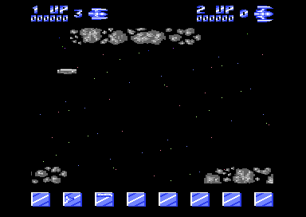

<meta charset="utf-8">
<meta name="viewport" content="width=device-width, initial-scale=1">
<title>{{title}}</title>
<link rel="preconnect" href="https://fonts.googleapis.com">
<link rel="stylesheet" href="https://fonts.googleapis.com/css2?family=Lato:wght@400;700;900&family=IBM+Plex+Mono:wght@400;500&display=swap">
<link rel="stylesheet" href="reference/delta-page.css">
<!-- tabs -->
<header class="hero">
  <p class="eyebrow">{{platform}} · {{year}} · {{publisher}}</p>
  <h1>{{title}}</h1>
  <p class="sub">Thirty-two stages, each announced in three words, with scenery along some and enemy fire that stops getting harder halfway.</p>
</header>
<main class="wrap">
<section id="stages">
  <p class="fig">01 · Thirty-two stages</p>
  <h2 class="t">32 stages, and the difficulty stops rising at 16</h2>
  <p class="lede">Each of the 32 stages announces itself in three words, and the ones you are entering bring rows of scenery along the top and bottom.</p>
  <div class="plate">
    <canvas id="bannerCv" width="400" height="200"></canvas>
    <div class="stages" id="stageStrip"></div>
    <div class="row"><span class="lab">Pass through the game</span><button data-pass="0" class="on">1st</button><button data-pass="1">2nd</button><button data-pass="2">3rd and later</button></div>
    <div class="out" id="stageOut"></div>
    <p class="cap"><b>Drawn from the game's tables:</b> the three words from <code>stage_banner_table</code> (<code>$F880</code>) and <code>stage_words</code> (<code>$EB80</code>), in the game's font at <code>$FC60</code>; the scenery rows from <code>stage_hazard_table</code> (<code>$F900</code>); the fire rules from <code>difficulty_by_loop</code> (<code>$FA20</code>). The decoder was checked against all 32 banners read from the game; stage 2's banner was also brought up live in VICE. Colours as in <code>reference/stage2-banner.png</code>, which the drawing matches pixel for pixel. Stages with an orange edge have scenery rows.</p>
  </div>
  <p>A banner is three of 30 eight-letter words, picked by two bytes per stage: the high four bits of the first byte choose the first word, the low four bits plus 4 the second, and the second byte plus 17 the third. The word list holds two that no stage uses: LOST and DRAGONS.</p>
  <p>The font has 39 glyphs of 20 bytes, ten rows of twelve pixels in multicolour, and the banner is drawn into eight sprites two letters at a time (<code>banner_draw_step</code>, <code>$3B80</code>).</p>
  <p>Difficulty depends on two numbers: the stage and the number of times the player has finished the game. Each enemy fires when its counter reaches the fire rate, and new fire is allowed only while the fire already in flight costs less than the budget (a shot counts 5, a bomb 10, a bullet 1). Both stop changing at stage 16 (<code>fire_rate_set</code> takes the stage capped at 15). After stage 32 the game plays tune 12, shows DELTA MISSION COMPLETE and starts again at stage 1 with the next of three tables (<code>difficulty_set</code>, <code>$9D35</code>).</p>
</section>

<section id="table">
  <p class="fig">02 · Every stage</p>
  <h2 class="t">All 32 stages in one table</h2>
  <p class="lede">The banner, the scenery rows and the enemy fire rules of every stage, read from the game's tables.</p>
  <div class="plate">
    <div class="row"><span class="lab">Pass through the game</span><button data-tpass="0" class="on">1st</button><button data-tpass="1">2nd</button><button data-tpass="2">3rd and later</button></div>
    <div class="scroll"><table id="stageTable"></table></div>
    <p class="cap">From <code>stage_banner_table</code> (<code>$F880</code>), <code>stage_hazard_table</code> (<code>$F900</code>) and <code>difficulty_by_loop</code> (<code>$FA20</code>), decoded by the same code as the banner above. The swatches are the two colours of the scenery rows. A lower fire rate fires sooner; the budget is the most fire allowed in flight.</p>
  </div>
  <p>The fire rate follows the stage in pairs and the budget stage by stage, and both stop at stage 16: <code>fire_rate_set</code> (<code>$9BAA</code>) and <code>enemy_fire_setup</code> (<code>$9100</code>) both cap the stage at 15 before looking it up. Stages 17 to 32 are as hard as stage 16. Only finishing the game makes them harder, through the next table, and the third table is used for every pass after the second.</p>
</section>

<section id="scenery">
  <p class="fig">03 · Scenery</p>
  <h2 class="t">Rows of rocks made of sprites</h2>
  <p class="lede">The ENTERING stages bring one or two rows of large shapes along the top and bottom of the play area.</p>
  <figure class="overview-shot"><figcaption>Stage 2, ENTERING ROCKS OF DEATH, in an emulator.</figcaption></figure>
  <p>The rows are not characters. Each shape is two sprites, and the raster interrupt that places the enemies moves the same seven sprites to the top row and again to the bottom row each frame (<code>irq_top_row</code> <code>$2000</code>, <code>irq_bottom_row</code> <code>$2040</code>). A new shape enters every eighth frame from a spawn list (<code>hazard_rows_step</code>, <code>$2080</code>), and the rows move 3 pixels a frame, animated from <code>$D200</code> (<code>hazard_frames_step</code>, <code>$9480</code>).</p>
  <p>The spawn lists and animation tables sit at <code>$D200</code>-<code>$D3FF</code>, in the RAM under the I/O chips. To read them the game switches the chips out (<code>$01</code> = <code>$34</code>) for a few instructions and back again, with interrupts still running. Between stages the shapes in the video bank are swapped with a second set kept at <code>$E000</code>, 128 bytes a frame (<code>stage_gfx_sequence</code>, <code>$9580</code>), which is how rocks become bubbles or machinery.</p>
  <p>The LEAVING stages, FURTHER SPACE and stage 1 have no rows. Ships and rows collide through the video chip's sprite collision register.</p>
</section>

</main>
<footer style="margin:16px 0 0;padding:22px var(--gx) 0;border-top:1px solid #e0ded8;font-family:'IBM Plex Mono',ui-monospace,Menlo,monospace;font-size:12px;color:#80838a"><a href="/kit.html" style="color:#1f5fa8;text-decoration:none">Kit changelog</a> · <a href="https://github.com/gamesexplained/gamesexplained" style="color:#1f5fa8;text-decoration:none">GitHub</a> · <a href="https://discord.gg/3V9GWyRDWV" style="color:#1f5fa8;text-decoration:none">Discord</a><br>© Games Explained contributors. Write-ups, facts and symbol maps are available under <a href="https://creativecommons.org/licenses/by-sa/4.0/" style="color:#1f5fa8;text-decoration:none">CC BY-SA 4.0</a>; code under <a href="https://opensource.org/licenses/MIT" style="color:#1f5fa8;text-decoration:none">MIT</a></footer>
<script src="../../lib/c64.js"></script>
<script src="reference/delta-page.js"></script>
